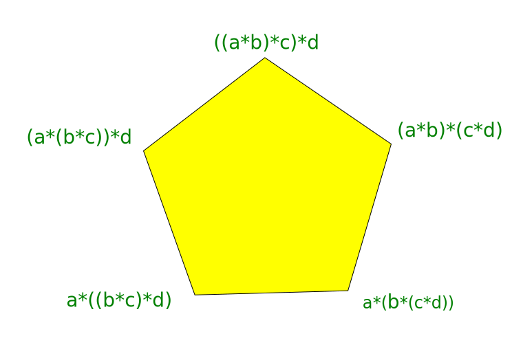

Homotopy type theory: Types as Spaces
Equality and Paths
$\infty$-groupoids from induction for equality
Type families as fibrations
Homotopy $n$-types (dimension)
Classifying spaces and Univalence
Synthetic homotopy theory
Types as Spaces
- We interpret
- Types as spaces.
- Terms of a type as points of the space.
- Functions $A \to B$ as continuous maps $A \to B$.
- For a type $A$ and terms $x, y: A$, the identity type $x = y$ as paths in $A$ from $x$ to $y$.
- We do not actually construct spaces, i.e., sets with topology, starting with a type.
- Instead we make topological (specifically homotopy theoretic) constructions and prove topological results in type theory.
- A practical consequence for type theories is that we get a canonical type theory.
Paths, Products, Homotopy
- As above, for a type $A$ and $x, y : A$, a term $p : (x = y)$ is interpreted as a path from $x$ to $y$.
- We can invert such a path - this is just the symmetry function on identity types $(x = y) \to (y = x)$.
- Similarly for $x, y, z: A$, the product of $p : x = y$ and $q : y = z$ is given by the transitivity of equality function $(x = y) \to (y = z)\to (x = z)$.
- For $x, y, z : A$, given paths, $p : x = y$, $q : y = z$ and $r: z = w$, with $x, y, z, w : A$, we can prove that there is a path of paths, i.e., a homotopy, between $(p * q) * r$ and $p * (q * r)$.
- Such a homotopy, which is constructed by induction, is just an element of $(p * q) * r = p * (q * r).$
Fundamental groupoids and $\infty$-groupoids
- Thus, considering paths up to homotopy, we get the fundamental groupoid of a type.
- We can instead consider the non-associative products on paths directly, together with a higher structure, namely a homotopy $(p * q) * r \sim p * (q * r)$ for paths $p$, $q$ and $r$ as above.
- This process continues to give an $\infty$-groupoid structures on types, from the induction principle for identity type families.
- The homotopy hypothesis says that $\infty$-groupoids are homotopy types of spaces.
Associativity up to homotopy : the Pentagon

Loop spaces and homotopy groups
- A based type is a type $A$ together with a term $a : A$.
- We can associate to a based type $(A, a)$ its loop space, which is the based type $(a = a, refl(a))$.
- We have a product on the loop space, using which we can define its fundamental group.
- Further, iterating this process, we can define higher homotopy groups.
Type families as fibrations
- We can show that any type family $P : A \to \mathfrak{U}$ is a fibration, i.e., we can lift paths and homotopies.
- Using path lifting, given $x, y: A$ and an equality $p: x = y$, we can define a transfer function $p_* : P(x) \to P(y)$.
- This allows us to transfer structure between equal objects, but depending on the choice of equality.
- If $x, y: A$, $p: x = y$ and $f: \prod_{a : A} P(a)$ then $f(y) = p_*(f(x))$.
- As a consequence of Voevodsky's univalence axiom, isomorphic types are equal, making the transfer very useful (but still consistent).
- An axiom here is a term of a specified type, which we introduce. This has no given properties other than its type.
Classifying spaces and Univalence
- We can define when a function $f: A \to B$ is an equivalence of types, essentially like homotopy equivalence.
- This lets us construct the type $A\simeq B$ of equivalences from $A$ to $B$.
- There is a natural inclusion $A = B \to A \simeq B$.
- Voevodsky's univalence axiom says that this is an equivalence.
- This is the uniqueness part of universes being classifying spaces for types.
Homotopy $n$-types
- A homotopy $n$-type is the homotopy type of a space with trivial homotopy groups above dimension $n$.
- We can define this inductively, with the homotopy type of a space $X$ a homotopy $(n + 1)$-type if for $a, b : X$, the path space $\Omega(X; a, b)$ is a homotopy $n$-type.
- We can start the induction with $n = -2$, where we require $X$ to be contractible (in particular non-empty).
- This hierarchy gives definitions in type theory.
- Further, we can truncate a type canonically to an $n$-type.
Sets and mere propositions
- A set is a space with all of its components contractible.
- A type $A$ is a set if for $x, y: A$ and $p, q: x = y$, we have $p = q$.
- A mere proposition is a type which is either empty or all of its elements are equal.
- Formally, $$isPropn(A) = \prod_{x : A} \prod_{y : A} (x = y).$$
- The concept of mere propostions, as well as propositional truncation, allow consistent mixing of classical logic with the type theoretic form.
Higher inductive types
In analogy with attaching cells of dimension $2$ and above, we can introduce (consistent) rules for introducing higher inductive types.
Synthetic homotopy theory
In the other direction, by axiomatizing type theoretic principles, we can develop synthetic homotopy theory, where the primitive concepts are spaces, points, maps, paths etc. but without requiring sets or topologies on them.